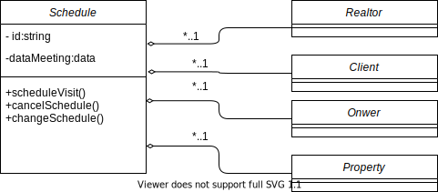
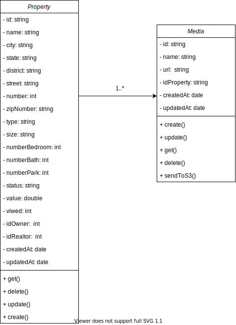
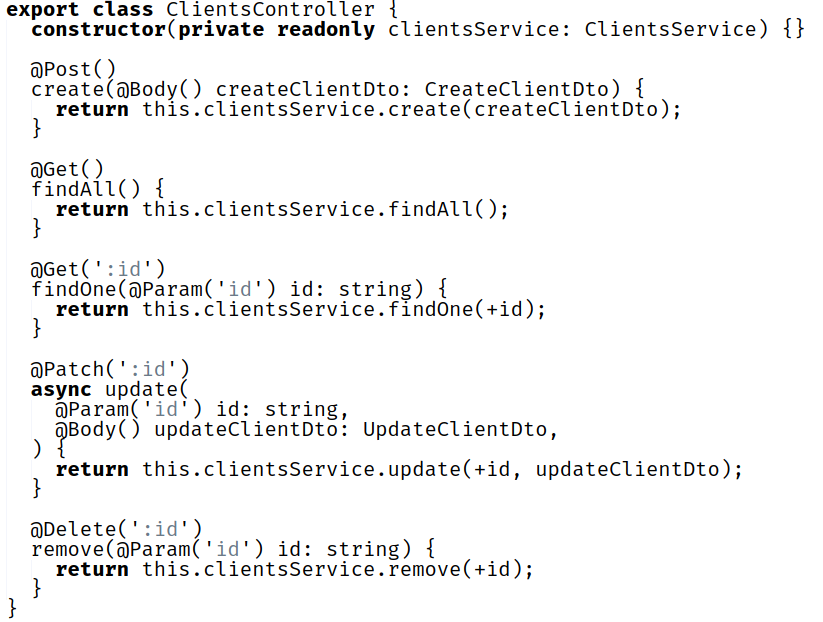
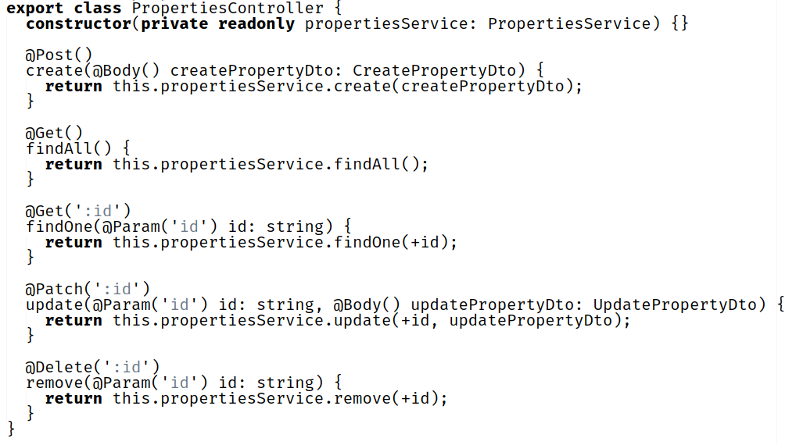
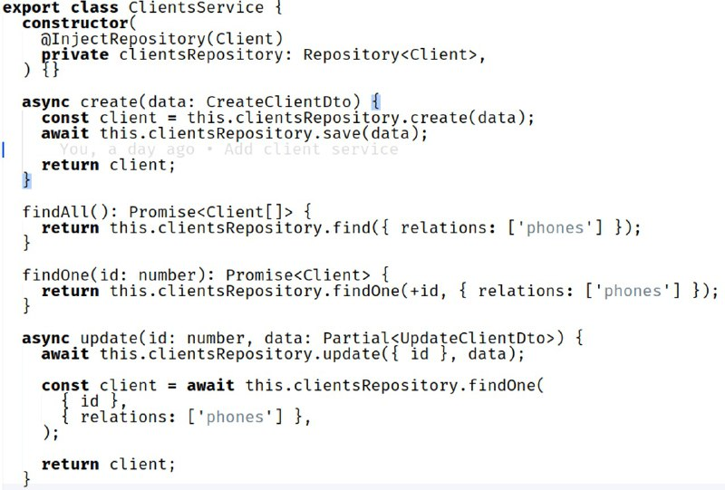

Padrões de Software para Atribuição de Responsabilidade Geral - GRASP
1. Introdução
Para Larman, os padrões GRASP "nomeiam e descrevem princípios fundamentais de atribuição de responsabilidade a objetos" (LARMAN, 2000). Criador, especialista, controlador, invenção pura, indireção, alta coesão, baixo acoplamento, polimorfismo e variações protegidas são alguns desses padrões e princípios descritos utilizados no GRASP.
2. Criador
Segundo Larman em seu livro "Utilizando UML e Padrões" O GRASP Criador vem para resolver o seguinte problema;
Quem deve ser responsável pela criação de uma nova instância de uma classe?
Em seu livro ele diz que a criação de objetos é uma das atividades mais comuns em um sistema orientado a objetos. Consequentemente, é útil ter um princípio geral para a atribuição de responsabilidades de criação. Sendo essas responsabilidades bem atribuídas, o projeto apresentará acoplamento baixo, mais clareza, encapsulamento e reutilização.
O Criador propõe atribui à classe B a responsabilidade de criar uma instância da classe A se uma das seguintes condições for verdadeira:
- B “contém” A ou agrega A de modo composto.
- B registra A.
- B usa A de maneira muito próxima.
- B tem os dados iniciais de A, que serão passados para A quando ele for criado. Assim, B é um Especialista em relação à criação de A.
B é um criador de objetos de A. Se mais de uma opção se aplicar, prefira uma classe B que agregue ou contenha a classe A.
2.1. Metodologia
A partir das discussões em equipe ocorrida no dia 30/08/2021, foi definido três padrões GRASP que seriam coerentes de se aplicar no nosso projeto. São eles: Criador, Controlador e Polimorfismo. Foi usado como insumo para os diagramas e implementações desses padrões o Diagrama de classes.
2.1. Aplicação no Projeto
Em nosso projeto esse GRASP é aplicável, a medida que a aplicação fará uso de agendamentos de visita ao imóvel, como pode ser conferido em nosso Backlog. A classe responsável pelo agendamento, como é visto no Diagrama de classes, precisa obter informações do imóvel, proprietário, corretor e cliente para registrar o agendamento adequadamente. Portanto a classe Schedule, será responsável por instanciar as classes Client, Owner, Realtor, Property, havendo uma relação de agregação entre o Schedule e os outros, como é visto na imagem a seguir:

Além disso, consultando o Diagrama de classes, é visto que a classe Property utiliza a classe Media, que é responsável por instâncias as referências de quaisquer mídias envolvidas à propriedade. Portanto é responsabilidade da classe Property instanciar a classe Media, havendo uma relação de uma associação entre elas como é visto na imagem a seguir:

3. Controlador
O padrão controlador "é um objeto de interface, não-de-usuário responsável por tratar um evento de sistema. Um controller define o método para a operação de sistema" (LARMAN, 2000). Normalmente, um controlador deve delegar a outros objetos o trabalho que precisa ser feito, ou seja, ele coordena ou controla uma atividade, mas não trabalha sozinho.
Dessa forma, um erro comum em projeto de controladores é dar-lhes muitas responsabilidades. Por isso, é uma boa prática delegar a outros objetos a execução de um evento, enquanto ele coordena a atividade(LARMAN, 2000). Alguns benefícios que os controladores trazem para uma aplicação é o maior potencial para reutilização e interfaces mais conectáveis.
3.1. Metodologia
A partir das discussões em equipe ocorrida no dia 30/08/2021, foi definido três padrões GRASP que seriam coerentes de se aplicar no nosso projeto. São eles: Criador, Controlador e Polimorfismo. Foi usado como insumo para os diagramas e implementações desses padrões o Diagrama de Classes.
Para a construção dos diagramas foi usado a ferramenta Draw.io.
3.2. Aplicação no Projeto
Os controladores implementados na nossa aplicação são os responsáveis por receber as requisições do browser. Por ter muitas atividades na aplicação e para evitar o "inchaço" de um controlador de fachada, optamos por implementar um controlador para cada classe concreta, onde esses ficaram responsáveis por coordenar as requisições recebidas por cada classe.
3.2.1. Diagrama

Autor: Douglas Castro
3.2.2. Controlador de Clientes

Autores: Douglas Castro e Pedro Haick
O código acima pode ser visto com mais detalhes aqui.
3.2.3. Diagrama

Autor: Douglas Castro
3.2.4. Controlador de Propriedades

Autores: Bruno Nunes e Gustavo Duarte
O código acima pode ser visto com mais detalhes aqui.
4. Polimorfismo
Polimorfismo corresponde ao padrão de projeto que determina que "as responsabilidades devem ser atribuídas a abstrações e não a objetos concretos, permitindo que eles possam variar conforme a necessidade" (BOAS, 2019). Ou seja, ao aplicar-se o polimorfismo, cria-se uma interface que possa ser implementada por classes diferentes mas que compartilhem certos comportamentos e características.
Esse padrão de projeto é vantajoso por proporcionar redução de código, além de flexibilizá-lo (MEDEIROS, 2012), possibilitando a criação de novas classes que realizam a mesma operação polimórfica, sem causar muito impacto para as outras classes dependentes da interface implementada (BASSETTO, 2011).
4.1 Metodologia
Na reunião do dia 30/08/2021, foi acordada pela equipe a aplicação deste padrão no nosso projeto por ser coerente ao nosso trabalho, além ser relativamente simples de ser aplicado.
4.2 Aplicação no projeto
O Polimorfismo foi aplicado em nosso projeto na criação da classe "Person", que serve como uma interface para as classes "Realtor" e "Client". Ambas as classes dependentes possuem os métodos de create, update, delete e get, que foram adicionados à interface principal.
4.2.1 Diagrama

Autores: Estevão Reis e Igor Araujo
5. Especialista na Informação
Segundo Larman em seu livro "Utilizando UML e Padrões" O GRASP Especialista na Informação vem para resolver o seguinte problema;
Qual é um princípio geral de atribuição de responsabilidades a objetos?
Em seu livro, ele diz que um modelo de projeto pode criar diversas classes de software, e, por sua vez, uma aplicação pode demandar a satisfação de milhares de responsabilidades a serem executadas. Durante o momento de planejamento e desenho dos objetos, quando o relacionamento entre objetos são definidas, deve-se fazer escolhas sobre atribuição de responsabilidades a classes de software. Fazendo isso de forma adequada, os sistemas tendem a ser mais fáceis de entender, de manter e de estender, permitindo mais oportunidades de reúso de componentes em futuras aplicações.
Portanto, o GRAPS Especialista vem trazendo essa solução em sua implementação:
Atribua responsabilidade ao especialista na informação – a classe que tem a informação necessária para satisfazer a responsabilidade.
5.1.Metodologia
Inicialmente a equipe não havia optado pela aplicação desse padrão em nosso projeto. Entretanto, na reunião ocorrida em 17/09/2021, a equipe decidiu descrever sobre todos os padrẽs GRASPS, mesmo não sendo aplicados no projeto, para fins didáticos, enriquecendo mais ainda a documentação.
Para a construção dos diagramas foi usado a ferramenta Draw.io.
5.2. Aplicação no projeto
Até o momento não foi identificado na aplicação a utilização deste GRASP, porém caso seja identificado a necessidade de ser utilizado, será documentada nesta parte do documento
6. Alta Coesão
Segundo Larman em seu livro "Utilizando UML e Padrões" O GRASP Alta Coesão vem para resolver o seguinte problema;
Como manter os objetos bem focados, inteligíveis e gerenciavéis e como efeito colateral apoiar Acoplamento Baixo?
Segundo Larman, se tratando de termos de projeto de objetos, a coesão é uma forma de medir o quanto as responsabilidades de um componente estão fortemente relacionadas e focalizadas. Um componente com responsabilidades altamente relacionadas e que não consegue realizar uma grande quantidade de tarefas tem coesão alta. Esses elementos incluem classes, subsistemas entre outros.
Portanto, este padrão soluciona o problema da seguinte forma:
Atribuir uma responsabilidade de forma que a coesão permaneça alta.
Uma classe com baixa coesão faz muitas coisas não associadas a ela e trabalha de forma desnecessária e indevida. Tais classes são inconvenientes pois enfrentam os seguintes problemas:
-
são difíceis de compreender
-
são difíceis de reutilizar
-
são difíceis de manter
-
são delicadas; constantemente afetadas por modificações
As classes com coesão baixa geralmente representam um grau de abstração muito alto e de “grande granularidade”, ou então assumiram responsabilidades que deveriam ter sido delegadas a outros objetos.
6.1.Metodologia
Inicialmente a equipe não havia optado pela aplicação desse padrão em nosso projeto. Entretanto, na reunião ocorrida em 17/09/2021, a equipe decidiu descrever sobre todos os padrẽs GRASPS, mesmo não sendo aplicados no projeto, para fins didáticos, enriquecendo mais ainda a documentação.
6.2. Aplicação no projeto
Até o momento não foi identificado na aplicação a utilização deste GRASP, porém caso seja identificado a necessidade de ser utilizado, será documentada nesta parte do documento
7. Baixo Acoplamento
O termo "acoplamento" se refere ao nível de conexão (ou dependência) de um elemento a outros (DE LIMA, 2015). Logo, quanto maior o acoplamento entre classes de um projeto, mais difícil se torna a realização de mudanças, pois estas causam grande impacto, e a reutilização de código. Para a resolução deste problema, aplica-se o padrão de projeto de Baixo Acoplamento.
Vários conceitos estão envolvidos na utilização do Baixo Acoplamento. Além da aplicação de outros padrões de projeto, como a Alta Coesão, a Indireção e as Variações Protegidas, ao implementar este padrão, também é utilizado o encapsulamento de informações e operações que sejam particulares às suas respectivas classes (BASSETTO, 2011). Através dessas implementações é possível reduzir o acoplamento de dados e de controle, aumentando a compreensão de cada classe isoladamente, facilitando sua reutilização e diminuindo o impacto das mudanças de outras classes (DE LIMA, 2015).
7.1. Metodologia
Inicialmente a equipe não havia optado pela aplicação desse padrão em nosso projeto. Entretanto, na reunião ocorrida em 17/09/2021, a equipe responsável pelo back-end do produto informou que, ao longo do desenvolvimento do projeto, esse padrão havia sido utilizado. Logo, foi acordado pela equipe a elaboração deste tópico e a apresentação da sua implementação em nosso código.
7.2. Aplicação no Projeto
O Baixo Acoplamento foi aplicado entre as classes ClientsController e ClientsServices. Apesar da dependência entre elas, foi aplicado o encapsultamento de informações através dos modificadores "private". Além disso, as operações implementadas pela ClientsController através da ClientsServices são decompostas em operações primitivas, evitando o acoplamento de controle.
7.2.1. ClientsServices

Autores: Douglas Castro e Pedro Haick
O código acima pode ser visto com mais detalhes aqui.
7.2.1. ClientsController
Autores: Douglas Castro e Pedro Haick
O código acima pode ser visto com mais detalhes aqui.
8. Indireção
A Indireção é um dos padrões que contribui para o Baixo Acoplamento de um projeto. Ele consiste na criação de uma classe mediadora que irá ser delegada de responsabilidades (BOAS, 2019). Dessa forma, é possível evitar o acoplamento direto entre duas classes, aumentando a possibilidade de reuso do código (DE LIMA, 2015).
Esse padrão pode ser aplicado de diversas formas, inclusive com a aplicação de outros padrões de projeto, como o Controlador ou a Injeção de Dependência. Além disso, diversos outros Design Patterns, não só GRASPs, se beneficiam da aplicação deste conceito (BASSETTO, 2011).
8.1. Metodologia
A equipe decidiu pela elaboração deste tópico neste documento na reunião do dia 17/09/2021. Logo após, durante as pesquisas para sua construção, notou-se que a equipe já havia implementado este padrão no projeto.
8.1.1 Aplicação no Projeto
Como citado anteriormente, a utilização do padrão Controlador é uma das maneiras de aplicação do padrão de Indireção. Portanto, aplicamos este projeto ao implementarmos os Controllers no nosso back-end.
9. Fabricação ou Invenção Pura
São classes criadas da imaginação, que suporta uma alta coesão, um baixo acoplamento e reutilização de maneira que o projeto desta invenção seja muito "limpo" e "puro", por isso elas são nomeadas como invenção pura. Essas classes podem ser entendidas como prestadoras de serviço e devem ter responsabilidades pequenas e coesas (LARMAN, 2000).
Alguns benefícios que esse padrão traz é a alta coesão e o baixo acoplamento, já que está focado em um conjunto muito específico de serviço, e o potencial de reutilização que pode ser aumentado, visto que as responsabilidades a elas atribuídas podem ser reutilizadas em outras aplicações (JHA, 2016).
9.1. Aplicação no Projeto
Não foi identificado esse padrão no projeto.
10. Variações Protegidas
O padrão Variações Protegidas protege os elementos das variações em outros elementos (objetos, sistemas, subsistemas) com foco na instabilidade com uma interface e usando polimorfismo para criar várias implementações desta interface. Seu principal objetivo é proteger o sistema ou uma classe de variações previstas ou que tenham grandes possibilidades de ocorrer (BASSETTO, 2011).
Podemos observar esse padrão quando precisamos integrar um sistema com API de pacotes de aplicações, por exemplo. Nessa situação a ideia é proteger o sistema ou uma determinada classe da possibilidade de alterações na interface do componente, do serviço ou da API (BASSETTO, 2011).
10.1. Aplicação no Projeto
Não identificamos esse padrão no projeto.
11. Referências
Larman, Craig. Utilizando UML e padrões. Bookman Editora, 2000.
MEDEIROS, Higor. Uso de Polimorfismo em Java. DevMedia, 2012. Disponível em: https://www.devmedia.com.br/uso-de-polimorfismo-em-java/26140. Acesso em: 17 de Agosto de 2021.
JHA, Ranjeet. GRASP Design Principles. mySoftKey, 2016. Disponível em: https://www.mysoftkey.com/architecture/grasp-design-principles/. Acesso em: 17 de Agosto de 2021.
BOAS, Leandro. Padrões GRASP — Padrões de Atribuir Responsabilidades. Medium, 2019. Disponível em: https://medium.com/@leandrovboas/padr%C3%B5es-grasp-padr%C3%B5es-de-atribuir-responsabilidades-1ae4351eb204. Acesso em: 17 de Agosto de 2021.
BASSETTO, Nelson. RDD – Responsibility Driven Design e GRASP – General Responsibility Assignment Software Principles (2 de 2). 2011. Disponível em: http://nelsonbassetto.com/blog/tags/grasp/. Acesso em: 17 de Agosto de 2021.
DE LIMA, Edirlei Soares. Análise e Projeto Orientados por Objetos - Aula 03 – Padrões de Projeto GRASP. 52 slides. 2015. Disponível em: https://edirlei.com/aulas/poo/POO_Aula_03_Padroes_Projeto_GRASP_2015.pdf Acesso em: 17 de Agosto de 2021.
Padrões GRASP — Padrões de Atribuir Responsabilidades. https://medium.com/@leandrovboas/padr%C3%B5es-grasp-padr%C3%B5es-de-atribuir-responsabilidades-1ae4351eb204. Acessado em 15/09/2021 Larman, Craig. Utilizando UML e Padrões. Acessado em 15/09/2021
12. Versionamento
| Data | Versão | Descrição | Autores |
|---|---|---|---|
| 30/08/2021 | 0.1 | Criação do arquivo | Estevao Reis |
| 15/09/2021 | 0.2 | Adição da estrutura do documento | Douglas Castro |
| 16/09/2021 | 0.3 | Adição da introdução | Douglas Castro |
| 16/09/2021 | 0.4 | Adição da metodologia usada para o controlador | Douglas Castro |
| 17/09/2021 | 0.5 | Adição dos controladores | Douglas Castro, Bruno Nunes, Pedro Haick e Gustavo Duarte |
| 17/09/2021 | 0.6 | Estruturação do Arquivo | Estevao Reis |
| 17/09/2021 | 0.7 | Revisão do Controlador | Giovana Dionisio |
| 17/09/2021 | 0.8 | Adição do padrão Invenção Pura | Douglas Castro |
| 17/09/2021 | 0.9 | Adição do padrão Variações Protegidas | Douglas Castro |
| 17/09/2021 | 1.0 | Adição do polimorfismo | Giovana Dionisio |
| 17/09/2021 | 1.1 | Adição do tópico de Baixo Acoplamento | Giovana Dionisio |
| 18/09/2021 | 1.2 | Revisão do documento | Giovana Dionisio, Douglas Castro |
| 18/09/2021 | 1.3 | Adição do GRASP Criador | Estevao Reis |
| 18/09/2021 | 1.4 | Adição do GRASP Especialista | Estevao Reis |
| 18/09/2021 | 1.5 | Adição do GRASP Alta Coesão | Estevao Reis |
| 19/09/2021 | 1.6 | Revisão | Bruno, Marcos, Luiz, Tomás, Gustavo, Igor |